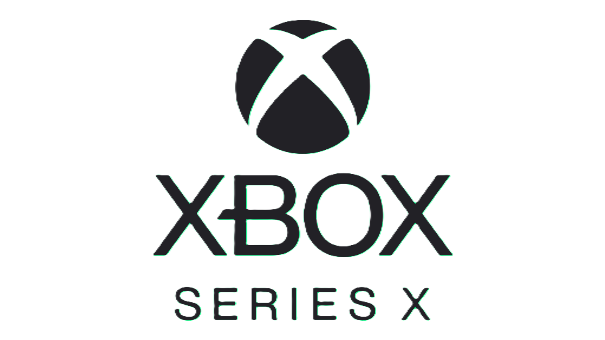
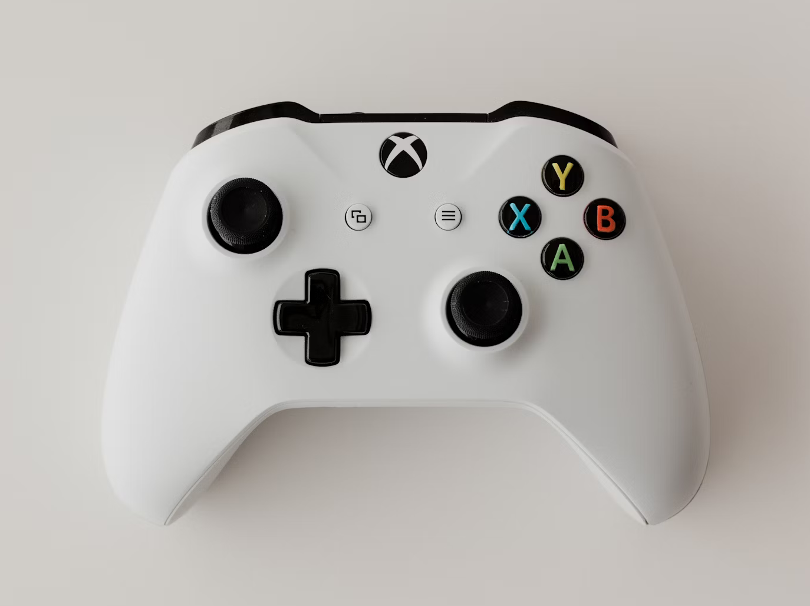
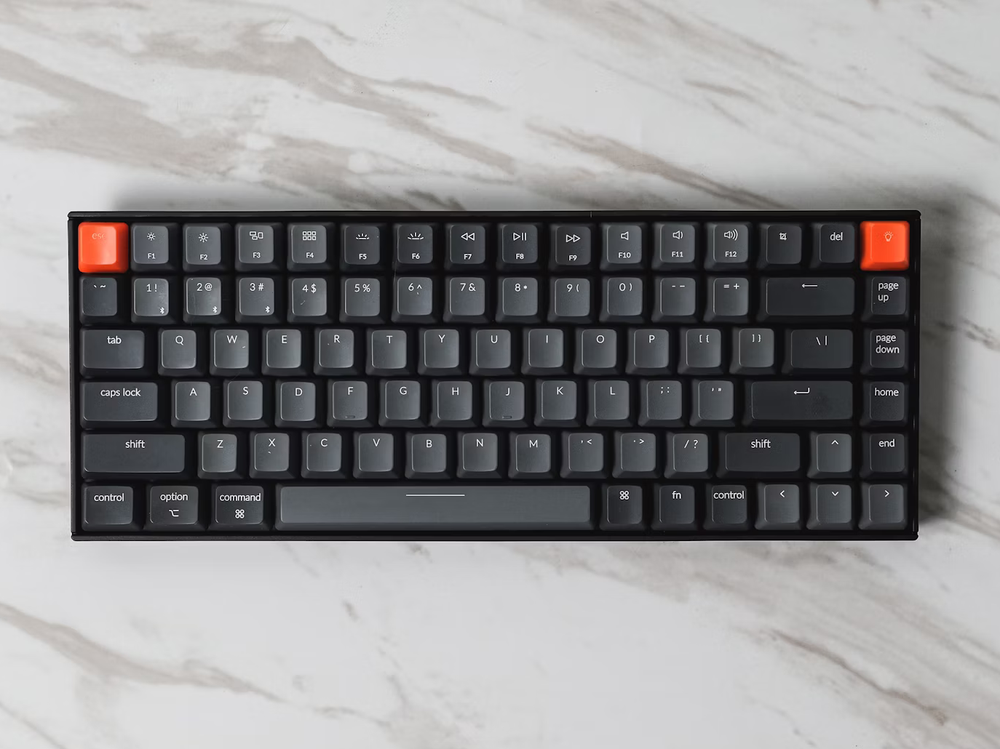
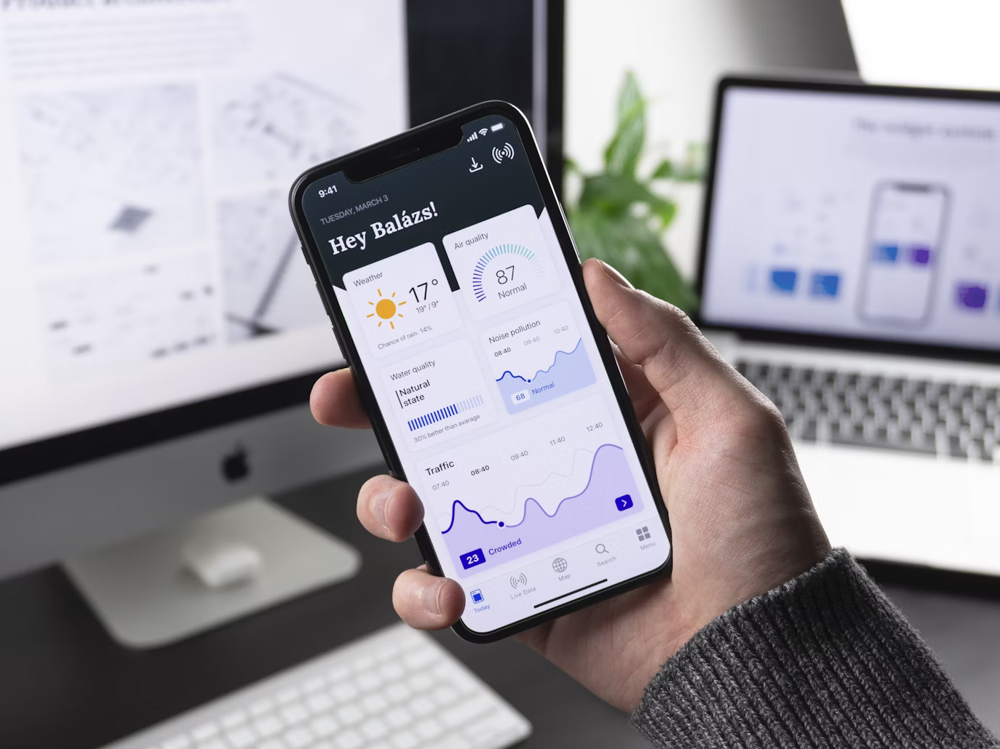

¿Qué hace accesible una consola?
Analizamos las características clave que permiten a jugadores con discapacidades disfrutar de la experiencia gaming:
- Compatibilidad con controles adaptativos
- Opciones de interfaz (tamaño de texto, contraste)
- Asistencia por voz y navegación auditiva
- Personalización de controles avanzada
Comparativa de Accesibilidad
| Consola | Control Adaptativo | Opciones Visuales | Opciones Auditivas | Personalización | Puntuación |
|---|---|---|---|---|---|
|

Xbox Series |
Xbox Adaptive Controller Copia de botones +20 periféricos compatibles | Alto contraste Zoom 200% Modo daltonismo | Subtítulos personalizables Chat por texto | Remapeo completo 4 perfiles guardados | 9.5/10 |
|
PlayStation 5 |
Botones remapeables Soporte limitado a 3ros | Texto grande Invertir colores | Subtítulos Indicadores visuales | Remapeo parcial | 7/10 |

Nintendo Switch |
Sin control oficial Soporte a 3ros | Ajuste de brillo | Subtítulos básicos | Muy limitado | 4.5/10 |
Las puntuaciones se basan en análisis de la comunidad y pruebas con usuarios con discapacidades (2025).
Periféricos Recomendados

Xbox Adaptive Controller
Mejor valorado
Xbox/PC
Control modular compatible con interruptores externos, joysticks y pedales.
- Precio: $99.99
- Compatibilidad: 19 puertos para dispositivos externos
- Recomendado para: Movilidad reducida, amputaciones

Teclado Half-QWERTY
PC
Teclado para una mano con diseño ergonómico y teclas programables.
- Precio: $129.99
- Compatibilidad: Windows/macOS
- Recomendado para: Hemiplejia, uso con una mano

Ratón de Pie 3D
PC
Controlado con movimientos del pie, ideal para usuarios sin movilidad en brazos.
- Precio: $199.99
- Compatibilidad: Windows
- Recomendado para: Tetraplejia, lesiones medulares
¿Cómo elegir tu configuración ideal?
- Prioriza controles con botones grandes y superficies táctiles.
- Busca opciones de remapeo completo de controles.
- Considera periféricos que no requieran presión (como sensores de movimiento).
- Verifica que la consola tenga modo alto contraste y zoom.
- Prefiere juegos con audio descriptivo y feedback háptico.
- Usa controles con texturas diferenciadas en botones.